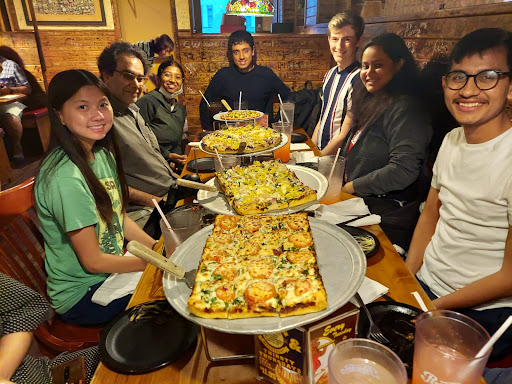

Jai Israni - Indiana University
Hi there. I am Jai Israni, going to the final year of Engineering Physics undergrad. I spent the summer of 2022 interning in the Chemistry Department at Indiana University Bloomington, Indiana, United States. To be clear in the very start, my work was mostly computational+mathematical and barely involved “chemistry” chemistry
Being honest here, 2 hours before the IAF closes, my younger brother wakes me up and reminds me to apply for it (I had told him about it earlier since this was one of the very few openings in the USA). I am short-listed for the interview, that takes place a week later. It goes quite well, the professor seems cheerful as he discusses the research in his group, but one never knows when the tables turn. For another week, I have fingers crossed. Around midnight of November 1 i.e. two weeks after my interview, a friend pings me congratulations on my selection. I open InstiApp to reassure myself as I can simply not believe it! This would be my first time in the United States. The “gilded footpaths of America” come floating in my mind. I’d be tempted to say that my destiny changed overnight.
For the next couple of days, I spend my free time looking up the map of the United States, various cities, topographies, cultural history of Indiana, flight tickets, housing, climates, etc. By the end of March, I have my visa, fixed accommodation, tickets. All set to go!
For the next couple of days, I spend my free time looking up the map of the United States, various cities, topographies, cultural history of Indiana, flight tickets, housing, climates, etc. By the end of March, I have my visa, fixed accommodation, tickets. All set to go!
I have free 10 days before my internship starts so I decide to go to California and meet grandparents.
During Spring 2022 endsems: In 12 days I leave for America, I am shortlisting places I’d visit in California. I end up spending a week on the Pacific Coast in San Francisco and camping two nights among black-bears in the wilderness of Yosemite National Park.
I then head from the West Coast to Midwest and Chicago where I spend couple of days. Now I can definitely vouch for Chicago being called the “windy city”, where one can sense breeze in the narrowest of lanes:
On May 8, I reach Bloomington city in Indiana which is the university town. It is 12 am and my cab driver is touring me around the quaint 2 century old campus. Bloomington is one of the quiet beautiful towns that one may imagine. From small cottages, book-cafes, eateries, clock tower, malls to nature preserves, hiking parks, lakes with boating facilities, it has everything. And yet it is barely noisy or over-populated — I get very excited for this internship. It takes me around two weeks to get settled comfortably. The university ID card allows me free transport in buses throughout the city, which is a huge advantage until I arrange a cycle at least. In coming days, I explore the city little by little through walking, jogging and bus. The university:

In the first 8 days here, I am introduced to the various projects going on in the research group in detail and am supposed to make a choice after that. My project topic turns out to be “Writing python code that uses tensor network of an N-dimensional function for sampling an N-dimensional grid with integer grid points”. Explaining in detail: we have an N dimensional grid with integer grid points, we need to select only some specific points using a sampling function. However if the number of points along each axis is large, the problem scales exponentially. So we create what is called a tensor network, that helps in computing the sampling function values not as accurately as computing the function itself, but to any arbitrary degree of accuracy in correspondingly reduced time and memory. The tensor networked values are not very obvious, they have to be minutely searched for in specific files and are arranged in a particular order. So I study these files and write code for extracting the tensor networked data and use it to perform K Means clustering (for sampling) along each axis, and then take set product of coordinates along each axis to get the final sampled grid. I am supposed to come to the office on weekdays. Schedule is pretty flexible, around 6-8 hours daily in the office, moreover since my project does not involve doing physical experiments, timings are not rigid. Basically I am given office keys and can stay there anytime of the day/night.
Having pledged not to have Indian cuisine in America, I am glad to have the various (healthy) options available here (occasionally unhealthy too). Just mix few raw ingredients - salt, pepper, oil, seasoning sauce as well maybe and heat in a pan or microwave. The entire process takes 15-30 minutes (one gets faster with practice eventually). Fruits, vegetables, cereals, grains all seem to retain the natural essence here, perhaps because the weather here is cool and less sultry in general. At times they taste too good when raw or just boiled. Various cuisines I try outside are North American, Mexican, Japanese, Korean, Italian, Greek, Turkish. I happen to buy 24 cans of Mediterranean flavoured sardines, after finishing that - 12 cans of smoked herrings and after finishing that - 12 cans of white crab meat. This was one of the best decisions I made because this seafood was extremely healthy, inexpensive, easy to cook, and of course very savoury when combined with tortillas/rice/baguette/pavé/focaccia bread/garlic bread/egg noodles. My daily dinner was sorted now. Lunch was mostly somewhere in Kirkwood - the street right across the university with over fifty restaurants. Naming a few - Chipotle, Five Guys, Qdoba, Starbucks, Noodles and Co, Hartzell’s Ice Cream, Potbelly, Teriyaki and Sushi, The Chocolate Moose, BuffaLouie’s, Bloomington Bagel Company, Fat Dan’s Chicago Style Deli, Döner Kebab food truck, The Trojan Horse, Jimmy Jones, Lennie’s, Goodfellas, Da Vinci, Turkuaz Cafe, India Garden, Village Deli, Cafe Pizzeria, Mother Bear’s Pizza, Siam House, Feta…. I’m sorry I can’t resist naming, they’re so fondly stuck in memory.
Some of the self-made meals I had:
My project starts with reading research papers related to my topic, understanding some code in FORTRAN that was written by a former PhD student in the group. After that, I spend around three weeks writing Python code from scratch that compares the following two plots through Gaussian overlap: K-means clustering of sampled points upon tensor networking, and the other is K-means clustering of sampled points without tensor networking.
One weekend my friends and I visit Indianapolis, the capital city of Indiana, where I find Brazilian fast-food to my liking. We kayak in the canal that runs through the city and take a tour of Eiteljorg Museum of native American Indians.


Very soon after that I come across a local hiking-group in Bloomington which decide upon a location to hike in nearby state park/state forest/nature preserves. They carpool enthusiastic hikers who do not have cars. Happening to bump into them is one of the most fortunate occurrences during my internship. I don’t remember a single weekend not hiking since then. Also, I buy a cheap second-hand cycle that enables me to ride in the well-planned and empty lanes of the city surrounded on both sides by trees and cottages, and explore the campus. I hike in Brown County State Park, Griffy Lake, Monroe Lake, Cedar Bluffs Nature Preserve, Leonard Springs Nature Park.
On the United States Independence weekend my friends and I visit New York City. I am glad I went there only to realise that I absolutely despise the city. It is so commercial, populated, touristy and dirty. Nevertheless I do some touristy stuff, including a watch of the famous Macy’s fireworks over the East River between Manhattan and Brooklyn on July 4th - the Independence Day.
Upon returning from NYC I start liking Bloomington even more. Now I have only two weeks of stay remaining in the United States. I decide to try out as many good restaurants in Bloomington, as possible along with finishing my own stock of groceries. Towards the end, I say farewell to my lab-mates, hiking friends, and staff in the restaurants I frequented. I sell off most of the furniture I had bought. I have to give a small presentation and summary of my overall work, discuss open problems related to it and possible extensions. I would say this work has been one of the most vital experiences as I begin my research career. Although I did not manage to work towards a publication in such a short timeframe, it is the first time I’ve actually formulated deep mathematical stuff into long codes, extensive periods of debugging, conducting validation of various methods. All this under the guidance of a strict and excellent mentor (who is also an excellent lawn tennis partner) and minute assists from other group members.
The professor gives the entire group a treat on account of successful completion of the internship.
I stroll one last time through downtown and Kirkwood. It is the day of my departure, seemingly more vibrant than majority of the days I spent in Bloomington, as if pursuing me to remain. I really do not feel like leaving. Having experienced so much over the summer, I feel there is yet a lot to do in Bloomington. After reaching India, the summer I spent indeed seems ideal to me, summarising it as “fun research in a paradisiacal place” !
Not to miss one fascinating thing about Mumbai airport, which I realise instantly upon landing. I see all kinds of crowds one would find all over India, random commotion, noise which remind me of the place I am from and have always lived - Mumbai. This kind of depresses me and sends more flashbacks of my stay in Bloomington. However, not all is lost and I start reverse-counting days from 40, there itself, before which I leave for my exchange semester to Zürich, Switzerland! …